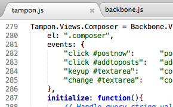
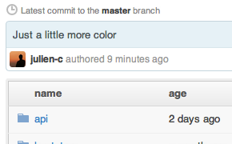

Circular, an open source Buffer app.
Stock up some great tweets and have them automatically shared throughout the day.
-
∞Posts in the queue right now.
-

Only the best of Buffer's features
Tampon implements Buffer's great original MVP: the ability to stock up tweets, choose a schedule, and have them shared automatically through the day.
-

Built on Backbone, Bootstrap and MongoDB
Tampon is a Backbone.js application that communicates with a MongoDB datastore through a REST API written in PHP.
-

And it's on Github!
Tampon is developed in the open on Github by Julien Chaumond. Feel free to fork and contribute!